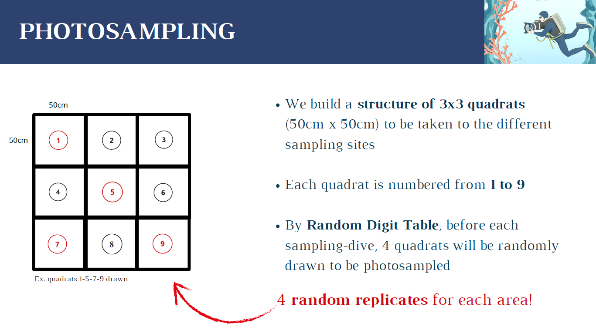

Designing a Long-Term Ecological Monitoring Programme for Mediterranean Gorgonian Forests
This project involved designing a complete ecological monitoring programme aimed at evaluating the long-term ecological consequences of a hypothetical mass mortality event affecting the Mediterranean gorgonian Eunicella cavolini inside the Portofino Marine Protected Area.
The project integrates ecological monitoring, marine conservation planning, underwater sampling design, statistical planning, budgeting, stakeholder analysis and legislative considerations into a realistic scientific framework.
The programme was designed to assess the ecological succession of benthic communities following the loss of gorgonian forests, with a focus on understanding how the disappearance of these habitat-forming species affects the broader ecosystem.
Assess post-disturbance ecological succession following the loss of Eunicella cavolini forests.
Monitor the recovery trajectory of benthic communities over a five-year period.
Track changes in species composition and percentage cover using photographic sampling.
Quantify benthic cover through photoquadrat analysis using ImageJ software.
Detect shifts in community structure and ecological function following gorgonian loss.
Design a realistic, long-term monitoring strategy applicable to Mediterranean MPAs.
The Portofino Marine Protected Area (Ligurian Sea, NW Mediterranean) was selected due to the ecological importance of its coralligenous habitats and extensive forests of Eunicella cavolini.
The study focuses on an area east of Faro Cape, on the border between MPA Zones B and C, where fewer restrictions on fishing activities and higher density of fishing vessel routes make the area particularly vulnerable to anthropogenic impacts.
Two impact sites and four control sites were selected for the monitoring programme. The sampling design includes 24 sampling units with 4 replicates for each area.
Mediterranean coralligenous habitats are among the most biodiverse marine ecosystems, supporting thousands of species.
Gorgonians create 3D "animal forests" that increase substrate complexity and provide ecological niches.
The structural complexity of gorgonian forests supports high biodiversity and ecosystem functioning.
Following disturbance, benthic communities undergo succession, with shifts in species composition and abundance.
Climate anomalies, disease outbreaks, and anthropogenic impacts can cause mass mortality of gorgonians.
Gorgonian forests provide shelter, feeding grounds and nursery areas for numerous marine species.

Ecological succession is driven by the disappearance of gorgonian canopy and associated habitat complexity, leading to a shift from hard coralline dominance to fleshy algae dominance.
Professional diving protocols for underwater sampling and photoquadrat collection.
Standardised 50×50 cm quadrats for benthic cover assessment.
Software-based percentage cover estimation and species composition analysis.
Five-year monitoring programme for ecological succession assessment.
BACI (Before-After-Control-Impact) design for rigorous ecological assessment.
Quantitative estimation of benthic community composition.
Assessment of community structure, diversity, and ecological function.
Integration of GPS data for precise site characterisation.
Complete scientific project proposal for long-term ecological monitoring.
Detailed monitoring protocol with standardised sampling procedures.
Comprehensive five-year ecological monitoring strategy.
Complete framework integrating ecology, conservation and planning.
Download the complete project report including all data, figures, and detailed analyses.
PDF document · 2.4 MB
"Effective marine conservation begins long before fieldwork—with rigorous scientific planning, robust monitoring design and a deep understanding of ecosystem dynamics."